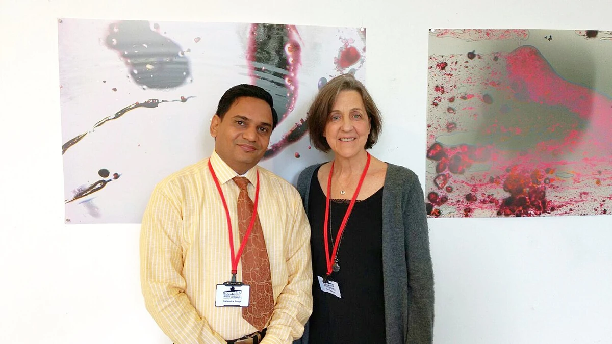

这样的工作，让你有劲
你更想理解一个人的经历和问题，愿意通过对话寻找解释。访谈提纲、时间线和明确的核对步骤，能让这种探究更合你的心意。
工作的一天
工作例子：按访谈方案了解一位参与者的就医经历，和团队讨论可能解释，再把对话与已有记录逐项核对。
可以优先了解的科室／行业方向
神经内科
关注怎样询问一位患者的病史，按线索核对症状出现和变化的经过。
这里按工作特点提供探索线索，结合实际体验和培养要求再判断。
值得试试的职业道路
主要了解
患者经历与医患沟通研究
了解重点：通过有结构的访谈理解个人经历，补充质性研究方法。
想用于临床时
重视病史采集的临床工作
了解重点：还要接受完整临床训练，不能靠访谈偏好推断诊疗能力。
对学习有兴趣时
医学教育访谈研究
了解重点：对象转为具体学习者，需要了解教育问题与评价方法。
认识一位职业榜样

点击查看高清图 · 照片来源与署名
把喜欢，放进真实工作里
如果交流只用于完成安排，很少有机会追问原因，你可能觉得理解还不够。研究访谈还需要明确同意、资料处理与解释边界。